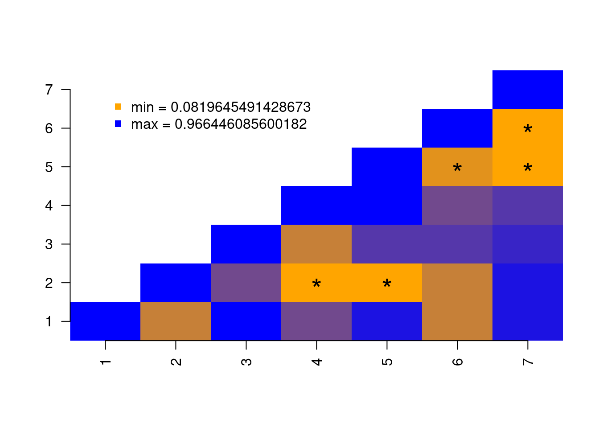
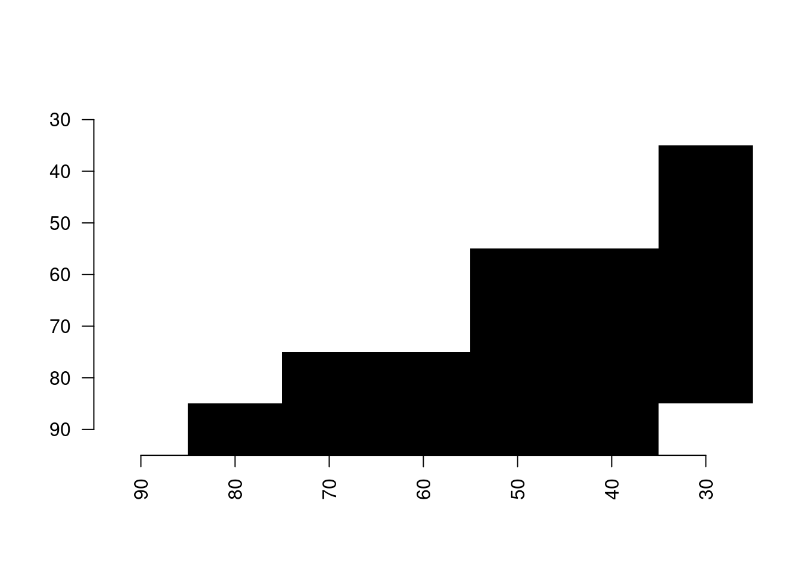
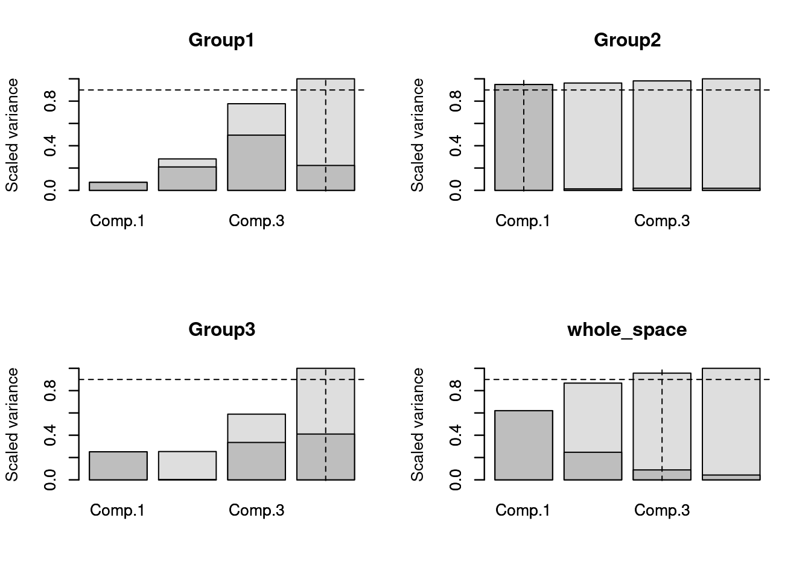
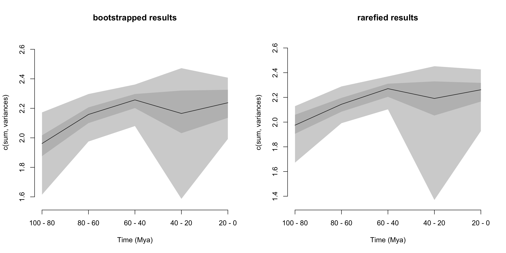

9 Palaeobiology demo: disparity-through-time and within groups
This demo aims to give quick overview of the dispRity package (v.1.4) for palaeobiology analyses of disparity, including disparity through time analyses.
This demo showcases a typical disparity-through-time analysis: we are going to test whether the disparity changed through time in a subset of eutherian mammals from the last 100 million years using a dataset from Beck and Lee (2014).
9.1 Before starting
9.1.1 The morphospace
In this example, we are going to use a subset of the data from Beck and Lee (2014).
See the example data description for more details.
Briefly, this dataset contains an ordinated matrix of the Gower distance between 50 mammals based (BeckLee_mat50), another matrix of the same 50 mammals and the estimated discrete data characters of their descendants (thus 50 + 49 rows, BeckLee_mat99), a dataframe containing the ages of each taxon in the dataset (BeckLee_ages) and finally a phylogenetic tree with the relationships among the 50 mammals (BeckLee_tree).
The ordinated matrix will represent our full morphospace, i.e. all the mammalian morphologies that ever existed through time (for this dataset).
## Loading demo and the package data
library(dispRity)
## Setting the random seed for repeatability
set.seed(123)
## Loading the ordinated matrix/morphospace:
data(BeckLee_mat50)
data(BeckLee_mat99)
head(BeckLee_mat50[,1:5])## [,1] [,2] [,3] [,4] [,5]
## Cimolestes -0.5613001 0.06006259 0.08414761 -0.2313084 -0.18825039
## Maelestes -0.4186019 -0.12186005 0.25556379 0.2737995 -0.28510479
## Batodon -0.8337640 0.28718501 -0.10594610 -0.2381511 -0.07132646
## Bulaklestes -0.7708261 -0.07629583 0.04549285 -0.4951160 -0.39962626
## Daulestes -0.8320466 -0.09559563 0.04336661 -0.5792351 -0.37385914
## Uchkudukodon -0.5074468 -0.34273248 0.40410310 -0.1223782 -0.34857351## [1] 50 48## The morphospace contains 50 taxa and has 48 dimensions (or axes)
## Showing a list of first and last occurrences data for some fossils
data(BeckLee_ages)
head(BeckLee_ages)## FAD LAD
## Adapis 37.2 36.8
## Asioryctes 83.6 72.1
## Leptictis 33.9 33.3
## Miacis 49.0 46.7
## Mimotona 61.6 59.2
## Notharctus 50.2 47.0
You can have an even nicer looking tree if you use the
strappackage!
if(!require(strap)) install.packages("strap")
strap::geoscalePhylo(BeckLee_tree, cex.tip = 0.7, cex.ts = 0.6)
9.1.2 Setting up your own data
I greatly encourage you to follow along this tutorial with your very own data: it is more exciting and, ultimately, that’s probably your objective.
What data can I use?
You can use any type of morphospace in any dataset form ("matrix", "data.frame"). Throughout this tutorial, you we assume you are using the (loose) morphospace definition from Thomas Guillerme, Cooper, et al. (2020): any matrix were columns are traits and rows are observations (in a distance matrix, columns are still trait, i.e. “distance to species A”, etc.).
We won’t cover it here but you can also use lists of matrices and list of trees.
How should I format my data for this tutorial?
To go through this tutorial you will need:
- A matrix with tip data
- A phylogenetic tree
- A matrix with tip and node data
- A table of first and last occurrences data (FADLAD)
If you are missing any of these, fear not, here are a couple of functions to simulate the missing data, it will surely make your results look funky but it’ll let you go through the tutorial.
## Functions to get simulate a PCO looking like matrix from a tree
i.need.a.matrix <- function(tree) {
matrix <- space.maker(elements = Ntip(tree), dimensions = Ntip(tree), distribution = rnorm,
scree = rev(cumsum(rep(1/Ntip(tree), Ntip(tree)))))
rownames(matrix) <- tree$tip.label
return(matrix)
}
## Function to simulate a tree
i.need.a.tree <- function(matrix) {
tree <- rtree(nrow(matrix))
tree$root.time <- max(tree.age(tree)$age)
tree$tip.label <- rownames(matrix)
tree$node.label <- paste0("n", 1:(nrow(matrix)-1))
return(tree)
}
## Function to simulate some "node" data
i.need.node.data <- function(matrix, tree) {
matrix_node <- space.maker(elements = Nnode(tree), dimensions = ncol(matrix),
distribution = rnorm, scree = apply(matrix, 2, var))
if(!is.null(tree$node.label)) {
rownames(matrix_node) <- tree$node.label
} else {
rownames(matrix_node) <- paste0("n", 1:(nrow(matrix)-1))
}
return(rbind(matrix, matrix_node))
}
## Function to simulate some "FADLAD" data
i.need.FADLAD <- function(tree) {
tree_ages <- tree.age(tree)[1:Ntip(tree),]
return(data.frame(FAD = tree_ages[,1], LAD = tree_ages[,1], row.names = tree_ages[,2]))
}You can use these functions for the generating the data you need. For example
In the end this is what your data should be named to facilitate the rest of this tutorial (fill in yours here):
9.2 A disparity-through-time analysis
9.2.1 Splitting the morphospace through time
One of the crucial steps in disparity-through-time analysis is to split the full morphospace into smaller time subsets that contain the total number of morphologies at certain points in time (time-slicing) or during certain periods in time (time-binning). Basically, the full morphospace represents the total number of morphologies across all time and will be greater than any of the time subsets of the morphospace.
The dispRity package provides a chrono.subsets function that allows users to split the morphospace into time slices (using method = continuous) or into time bins (using method = discrete).
In this example, we are going to split the morphospace into five equal time bins of 20 million years long from 100 million years ago to the present.
We will also provide to the function a table containing the first and last occurrences dates for some fossils to take into account that some fossils might occur in several of our different time bins.
## [1] 100 80 60 40 20 0## Splitting the morphospace using the chrono.subsets function
(binned_morphospace <- chrono.subsets(data = my_matrix, tree = my_tree,
method = "discrete", time = time_bins, inc.nodes = FALSE,
FADLAD = my_fadlad))## ---- dispRity object ----
## 5 discrete time subsets for 50 elements in one matrix:
## 100 - 80, 80 - 60, 60 - 40, 40 - 20, 20 - 0.The output object is a dispRity object (see more about that here.
In brief, dispRity objects are lists of different elements (i.e. disparity results, morphospace time subsets, morphospace attributes, etc.) that display only a summary of the object when calling the object to avoiding filling the R console with superfluous output.
It also allows easy plotting/summarising/analysing for repeatability down the line but we will not go into this right now.
## [1] "dispRity"## List of 3
## $ matrix :List of 1
## ..$ : num [1:50, 1:48] -0.561 -0.419 -0.834 -0.771 -0.832 ...
## .. ..- attr(*, "dimnames")=List of 2
## .. .. ..$ : chr [1:50] "Cimolestes" "Maelestes" "Batodon" "Bulaklestes" ...
## .. .. ..$ : NULL
## $ call :List of 1
## ..$ subsets: Named chr [1:4] "discrete" "1" "1" "FALSE"
## .. ..- attr(*, "names")= chr [1:4] "" "trees" "matrices" "bind"
## $ subsets:List of 5
## ..$ 100 - 80:List of 1
## .. ..$ elements: int [1:8, 1] 5 4 6 8 43 10 11 42
## ..$ 80 - 60 :List of 1
## .. ..$ elements: int [1:15, 1] 7 8 9 1 2 3 12 13 14 44 ...
## ..$ 60 - 40 :List of 1
## .. ..$ elements: int [1:13, 1] 41 49 24 25 26 27 28 21 22 19 ...
## ..$ 40 - 20 :List of 1
## .. ..$ elements: int [1:6, 1] 15 39 40 35 23 47
## ..$ 20 - 0 :List of 1
## .. ..$ elements: int [1:10, 1] 36 37 38 32 33 34 50 48 29 30
## - attr(*, "class")= chr "dispRity"## [1] "matrix" "call" "subsets"## ---- dispRity object ----
## 5 discrete time subsets for 50 elements in one matrix:
## 100 - 80, 80 - 60, 60 - 40, 40 - 20, 20 - 0.These objects will gradually contain more information when completing the following steps in the disparity-through-time analysis.
9.2.2 Bootstrapping the data
Once we obtain our different time subsets, we can bootstrap and rarefy them (i.e. pseudo-replicating the data).
The bootstrapping allows us to make each subset more robust to outliers and the rarefaction allows us to compare subsets with the same number of taxa to remove sampling biases (i.e. more taxa in one subset than the others).
The boot.matrix function bootstraps the dispRity object and the rarefaction option within performs rarefaction.
## Bootstrapping each time subset 100 times (default)
(boot_bin_morphospace <- boot.matrix(binned_morphospace))## ---- dispRity object ----
## 5 discrete time subsets for 50 elements in one matrix with 48 dimensions:
## 100 - 80, 80 - 60, 60 - 40, 40 - 20, 20 - 0.
## Data was bootstrapped 100 times (method:"full").## Getting the minimum number of rows (i.e. taxa) in the time subsets
min(size.subsets(boot_bin_morphospace))## [1] 6## Bootstrapping each time subset 100 times and rarefying them
(rare_bin_morphospace <- boot.matrix(binned_morphospace, bootstraps = 100,
rarefaction = 6))## ---- dispRity object ----
## 5 discrete time subsets for 50 elements in one matrix with 48 dimensions:
## 100 - 80, 80 - 60, 60 - 40, 40 - 20, 20 - 0.
## Data was bootstrapped 100 times (method:"full") and rarefied to 6 elements.Note how information is adding up to the
dispRityobject.
9.2.3 Calculating disparity
We can now calculate the disparity within each time subsets along with some confidence intervals generated by the pseudoreplication step above (bootstraps/rarefaction).
Disparity can be calculated in many ways and this package allows users to come up with their own disparity metrics.
For more details, please refer to the dispRity metric section (or directly use moms).
In this example, we are going to look at how the spread of the data in the morphospace through time. For that we are going to use the sum of the variance from each dimension of the morphospace in the morphospace. We highly recommend using a metric that makes sense for your specific analysis and for your specific dataset and not just because everyone uses it (Thomas Guillerme, Puttick, et al. 2020, @Guillerme2020)!
How can I be sure that the metric is the most appropriate for my morphospace and question?
This is not a straightforward question but you can use the test.metric function to check your assumptions (more details here): basically what test.metric does is modifying your morphospace using a null process of interest (e.g. changes in size) and checks whether your metric does indeed pick up that change.
For example here, let see if the sum of variances picks up changes in size but not random changes:
my_test <- test.metric(my_matrix, metric = c(sum, variances), shifts = c("random", "size"))
summary(my_test)## 10% 20% 30% 40% 50% 60% 70% 80% 90% 100% slope
## random 2.59 2.47 2.52 2.52 2.51 2.53 2.52 2.52 2.51 2.52 -5.969668e-05
## size.inner 2.23 2.23 2.25 2.28 2.31 2.35 2.39 2.43 2.48 2.52 3.656145e-03
## size.outer 2.45 2.51 2.55 2.64 2.52 2.62 2.60 2.57 2.54 2.52 3.197697e-04
## p_value R^2(adj)
## random 7.901693e-01 -0.03305151
## size.inner 5.138104e-18 0.95020115
## size.outer 4.129151e-01 -0.01113691
We see that changes in the inner size (see Thomas Guillerme, Puttick, et al. (2020) for more details) is actually picked up by the sum of variances but not random changes or outer changes. Which is a good thing!
As you’ve noted, the sum of variances is defined in test.metric as c(sum, variances). This is a core bit of the dispRity package were you can define your own metric as a function or a set of functions.
You can find more info about this in the dispRity metric section but in brief, the dispRity package considers metrics by their “dimensions” level which corresponds to what they output. For example, the function sum is a dimension level 1 function because no matter the input it outputs a single value (the sum), variances on the other hand is a dimension level 2 function because it will output the variance of each column in a matrix (an example of a dimensions level 3 would be the function var that outputs a matrix).
The dispRity package always automatically sorts the dimensions levels: it will always run dimensions level 3 > dimensions level 2 > and dimensions level 1. In this case both c(sum, variances) and c(variances, sum) will result in actually running sum(variances(matrix)).
Anyways, let’s calculate the sum of variances on our bootstrapped and rarefied morphospaces:
## Calculating disparity for the bootstrapped data
(boot_disparity <- dispRity(boot_bin_morphospace, metric = c(sum, variances)))## ---- dispRity object ----
## 5 discrete time subsets for 50 elements in one matrix with 48 dimensions:
## 100 - 80, 80 - 60, 60 - 40, 40 - 20, 20 - 0.
## Data was bootstrapped 100 times (method:"full").
## Disparity was calculated as: c(sum, variances).## Calculating disparity for the rarefied data
(rare_disparity <- dispRity(rare_bin_morphospace, metric = c(sum, variances)))## ---- dispRity object ----
## 5 discrete time subsets for 50 elements in one matrix with 48 dimensions:
## 100 - 80, 80 - 60, 60 - 40, 40 - 20, 20 - 0.
## Data was bootstrapped 100 times (method:"full") and rarefied to 6 elements.
## Disparity was calculated as: c(sum, variances).To display the actual calculated scores, we need to summarise the disparity object using the S3 method summary that is applied to a dispRity object (see ?summary.dispRity for more details).
By the way, as for any R package, you can refer to the help files for each individual function for more details.
## subsets n obs bs.median 2.5% 25% 75% 97.5%
## 1 100 - 80 8 2.207 1.962 1.615 1.876 2.017 2.172
## 2 80 - 60 15 2.315 2.158 1.975 2.100 2.207 2.297
## 3 60 - 40 13 2.435 2.257 2.080 2.202 2.297 2.361
## 4 40 - 20 6 2.604 2.165 1.587 2.032 2.320 2.472
## 5 20 - 0 10 2.491 2.238 1.992 2.136 2.326 2.408## subsets n obs bs.median 2.5% 25% 75% 97.5%
## 1 100 - 80 8 2.207 1.975 1.672 1.905 2.059 2.129
## 2 100 - 80 6 NA 1.933 1.369 1.811 2.082 2.230
## 3 80 - 60 15 2.315 2.144 1.991 2.084 2.196 2.289
## 4 80 - 60 6 NA 2.187 1.827 2.061 2.312 2.465
## 5 60 - 40 13 2.435 2.271 2.103 2.205 2.311 2.370
## 6 60 - 40 6 NA 2.249 1.733 2.108 2.368 2.507
## 7 40 - 20 6 2.604 2.191 1.370 2.053 2.329 2.452
## 8 20 - 0 10 2.491 2.262 1.927 2.166 2.318 2.426
## 9 20 - 0 6 NA 2.288 1.743 2.130 2.354 2.515The
summary.dispRityfunction comes with many options on which values to calculate (central tendency and quantiles) and on how many digits to display. Refer to the function’s manual for more details.
9.2.4 Plotting the results
It is sometimes easier to visualise the results in a plot than in a table.
For that we can use the plot S3 function to plot the dispRity objects (see ?plot.dispRity for more details).
## Graphical options
quartz(width = 10, height = 5) ; par(mfrow = (c(1,2)), bty = "n")
## Plotting the bootstrapped and rarefied results
plot(boot_disparity, type = "continuous", main = "bootstrapped results")
plot(rare_disparity, type = "continuous", main = "rarefied results")
Nice. The curves look pretty similar.
Same as for the
summary.dispRityfunction, check out theplot.dispRitymanual for the many, many options available.
9.2.5 Testing differences
Finally, to draw some valid conclusions from these results, we can apply some statistical tests.
We can test, for example, if mammalian disparity changed significantly through time over the last 100 million years.
To do so, we can compare the means of each time-bin in a sequential manner to see whether the disparity in bin n is equal to the disparity in bin n+1, and whether this is in turn equal to the disparity in bin n+2, etc.
Because our data is temporally autocorrelated (i.e. what happens in bin n+1 depends on what happened in bin n) and pseudoreplicated (i.e. each bootstrap draw creates non-independent time subsets because they are all based on the same time subsets), we apply a non-parametric mean comparison: the wilcox.test.
Also, we need to apply a p-value correction (e.g. Bonferroni correction) to correct for multiple testing (see ?p.adjust for more details).
## Testing the differences between bins in the bootstrapped dataset.
test.dispRity(boot_disparity, test = wilcox.test, comparison = "sequential",
correction = "bonferroni")## [[1]]
## statistic: W
## 100 - 80 : 80 - 60 791
## 80 - 60 : 60 - 40 1946
## 60 - 40 : 40 - 20 6208
## 40 - 20 : 20 - 0 4225
##
## [[2]]
## p.value
## 100 - 80 : 80 - 60 3.362697e-24
## 80 - 60 : 60 - 40 3.437652e-13
## 60 - 40 : 40 - 20 1.269261e-02
## 40 - 20 : 20 - 0 2.337298e-01## Testing the differences between bins in the rarefied dataset.
test.dispRity(rare_disparity, test = wilcox.test, comparison = "sequential",
correction = "bonferroni")## [[1]]
## statistic: W
## 100 - 80 : 80 - 60 963
## 80 - 60 : 60 - 40 1553
## 60 - 40 : 40 - 20 5975
## 40 - 20 : 20 - 0 4288
##
## [[2]]
## p.value
## 100 - 80 : 80 - 60 2.415081e-22
## 80 - 60 : 60 - 40 1.491356e-16
## 60 - 40 : 40 - 20 6.904555e-02
## 40 - 20 : 20 - 0 3.285062e-01Here our results show significant changes in disparity through time between all time bins (all p-values < 0.05). However, when looking at the rarefied results, there is no significant difference between the time bins in the Palaeogene (60-40 to 40-20 Mya), suggesting that the differences detected in the first test might just be due to the differences in number of taxa sampled (13 or 6 taxa) in each time bin.
9.3 Some more advanced stuff
The previous section detailed some of the basic functionalities in the dispRity package but of course, you can do some much more advanced analysis, here is just a list of some specific tutorials from this manual that you might be interested in:
- Time slicing: an alternative method to look at disparity through time that allows you to specify evolutionary models (Guillerme and Cooper 2018).
- Many more disparity metrics: there are many, many different things you might be interested to measure in your morphospace! This manual has some extended documentation on what to use (or check Thomas Guillerme, Puttick, et al. (2020)).
- Many more ways to look at disparity: you can for example, use distributions rather than point estimates for your disparity metric (e.g. the variances rather than the sum of variances); or calculate disparity from non ordinated matrices or even from multiple matrices and trees.
- And finally there are much more advanced statistical tests you might be interested in using, such as the NPMANOVA, the “disparity-through-time test”, using a null model approach or some model fitting…
You can even come up with your own ideas, implementations and modifications of the package: the dispRity package is a modular and collaborative package and I encourage you to contact me (guillert@tcd.e) for any ideas you have about adding new features to the package (whether you have them already implemented or not)!
References
Beck, Robin M, and Michael S Lee. 2014. “Ancient Dates or Accelerated Rates? Morphological Clocks and the Antiquity of Placental Mammals.” Proceedings of the Royal Society B: Biological Sciences 281 (20141278): 1–10. https://doi.org/10.1098/rspb.2014.1278.
Guillerme, T., and N. Cooper. 2018. “Time for a Rethink: Time Sub-Sampling Methods in Disparity-Through-Time Analyses.” Palaeontology 61 (4): 481–93. https://doi.org/10.1111/pala.12364.
Guillerme, Thomas, Natalie Cooper, Stephen L. Brusatte, Katie E. Davis, Andrew L. Jackson, Sylvain Gerber, Anjali Goswami, et al. 2020. “Disparities in the Analysis of Morphological Disparity.” Biology Letters 16 (7): 20200199. https://doi.org/10.1098/rsbl.2020.0199.
Guillerme, Thomas, Mark N Puttick, Ariel E Marcy, and Vera Weisbecker. 2020. “Shifting Spaces: Which Disparity or Dissimilarity Measurement Best Summarize Occupancy in Multidimensional Spaces?” Ecology and Evolution. Wiley Online Library.